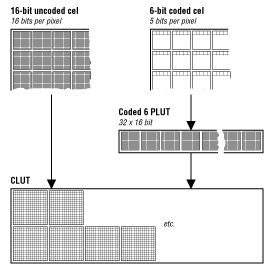

The two basic formats for 3DO graphics are 3DO images and 3DO cels.
A 3DO image is the simplest kind of 3DO graphic. For NTSC screens, it
is a 320-x-240 array of 16-bit pixel values, laid out in the format of the
display buffer (352 x 288 for PAL). The hardware can draw an image very
quickly by copying it into the display buffer directly, but cannot process
or compress images. jsbasicslideshow.c displays images in sequence based
on user input. It's also possible to let the slide show run in stand-alone
mode.
A 3DO cel is more complex than an image. In addition to the raw pixel
data, a cel has a header called a cel control block (CCB) that tells the
cel engine how to draw the cel. A program can flip, rotate, stretch, or
even "bow-tie" the cel as it is being displayed. You can also make parts
of the cel transparent or translucent, or you can enhance its luminance,
if the illustration has been prepared correctly using the 3DO PostPro
tool, a Photoshop custom plug-in, or the 3DO Animator tool. Most of the
Jumpstart2 example programs use cels.
There are several cel formats. The format depends on the number of bits
per pixel and on whether the cel is indexed into a color table (coded) or
not.
Note: 3DO animations consist of 3DO cels, and are discussed in Playing an Animation.
Uncoded cels contain pixels with values that are turned directly into
16-bit frame-pixel values. Uncoded cels offer a large number of colors but
use more memory than coded cels.
Coded cels are indexed into a color table. As a result, coded cels end up
being much smaller than uncoded cels, as illustrated below.

Figure 1: How uncoded and coded cels use the system color table.
The color table is part of a pixel lookup table (PLUT). The PLUT contains
the color table and may also contain extra bits to store information about
how the pixel is displayed. A pixel may become partly transparent, may
have its color enhanced by an alternate multiply value (AMV), or may be
mixed with the background using a P-Mode setting. P-Mode (or Pixel-Mode)
lets you change the display for predefined pixels or predefined colors.
You can use P-Mode, for example, to make part of a cel translucent and
part of a cel opaque, or to make part of a cel smoky or enhance its
brightness.
Commonly used cel formats are 16-bit uncoded cels 8-bit or 6-bit coded
cels:
16-bit uncoded cels store a full 15-bit RGB value for each pixel,
allowing the cel to use the full range of display colors. Because each
pixel takes up 2 bytes, these cels take twice as long to render as cels
that use 8 or fewer bits per pixel. The topmost bit in a 16-bit uncoded
cel is used for P-Mode.
8-bit coded cels provide 32 colors and 7 additional shades of each
color. They don't use much more space than 6-bit coded cels but provide
far more colors. You can use the Coded-8 CelWriter, discussed in the
3DO Custom Plug-Ins and CCMs manual in the volume "3DO Tools for
Art Production," to create 8-bit coded cels.
6-bit coded cels have only 32 colors. Each pixel is stored as a 5-bit
index into a palette of 32 colors. The palette is user-definable, and can
be unique to one cel or shared among many cels. The topmost bit in a 6-bit
coded cel is used for P-Mode, just like the topmost bit in a 16-bit
uncoded cel.
3DO developers don't often use 8-bit uncoded cels, since they offer only
256 colors and color distortion during cel creation can be quite
noticeable.